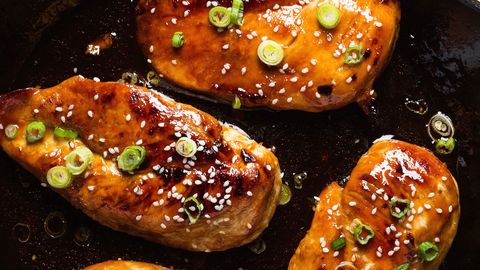

Honey Garlic Chicken Recipe

Description
This honey garlic chicken is packed with flavor and takes solittle time and effort, it's nearly unbelievable. Bless the Instant Pot. If you are anything like me, you come home from a long day at work and just dread having to figure out what to make for dinner - fear not this recipe is here for you. All in all, this will take about 30 minutes. But the best part is that if all you've got lying around is chicken in the freezer because you totally spaced taking it out the thaw, the Instant Pot will cook it just the same as thawed chicken.
Ingredients
- 4 chicken breasts
- 3 cups broccoli florets
- 1-2 tbsp chopped parsley
- 4 cloves minced garlic
- 1/2 cup of soy sauce
- 1/3 cup honey
- 1/2 cup ketchup
- 1 tbsp sesame oil
- Pinch of red pepper flakes
- Squeeze of lime juice, if you would like to add it, but not necessary
- Salt and pepper to taste
- 1/2 tsp dried oregano
- 1/2 tbsp sesame seeds
- 1.5 cups of rice
Steps
- Add ketchup, honey, soy sauce, garlic, oregano, lime juice (optional), garlic, parsley, red pepper flakes, and sesame seeds to bowl. Whisk together.
- Lay out chicken breasts and season generously on both sides with salt and pepper.
- Press "Sauté" button on Instant Pot, add sesame oil.
- It heats up very quickly, so just watch for the oil getting thin and covering the bottom of the pot. Add the chicken.
- Cook chicken for 2-3 minutes per side. Be careful because the oil will be popping quite a bit.
- Rinse and begin cooking rice.
- Begin steaming broccoli.
- Once cooked, add sauce, put lid on the pot and lock it.
- Cook in "Poultry" mode for 10 minutes.
- Once finished cooking, turn Instant Pot off and let pressure release naturally for about 5 minutes. Then open pressure latch and allow the rest of the pressure to release.
- Service on top of rice with broccoli on the side. Spoon a little extra sauce on top.